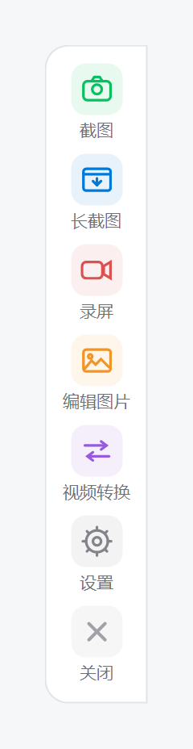

截图
快捷键一键框选，支持自定义保存路径，保存后自动复制到剪贴板。
贴边悬浮窗，悬停展开；快捷键、文件夹、热键、画质全可配置。轻量无广告，为你的 Windows 提效。

悬停展开后的贴边悬浮窗
快捷键一键框选，支持自定义保存路径，保存后自动复制到剪贴板。
滚动区域自动拼接，网页、文档、聊天记录等超长内容一键截取。
自由设置帧率、画质、鼠标指针与系统声音，录制教学演示更清晰。
截图后快速标注编辑，减少在不同工具间来回切换的麻烦。
多种格式一键转换，界面简洁，转换过程清晰可控。
开机自启、悬浮窗、保存位置、热键、画质，按需自由配置。
把悬浮窗拖到屏幕任意边缘，它会自动贴边并半隐藏。鼠标悬停即可展开全部功能，移开后自动收回，不打扰日常工作。